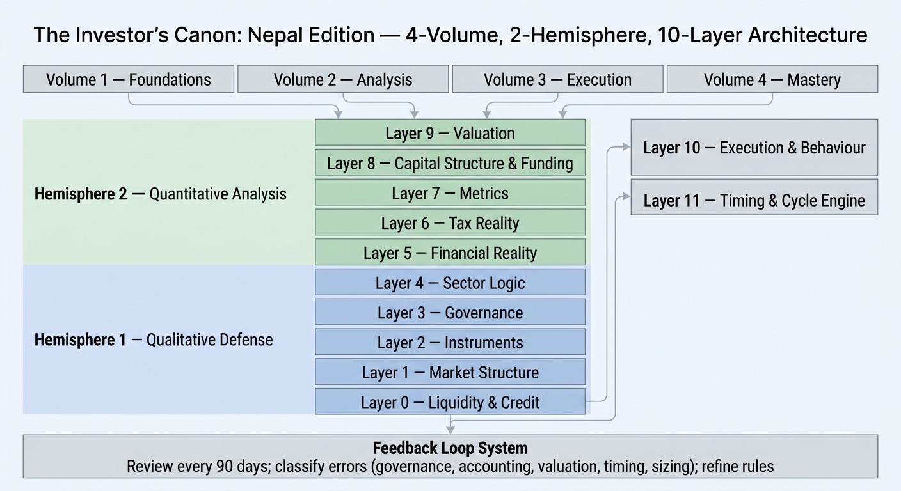
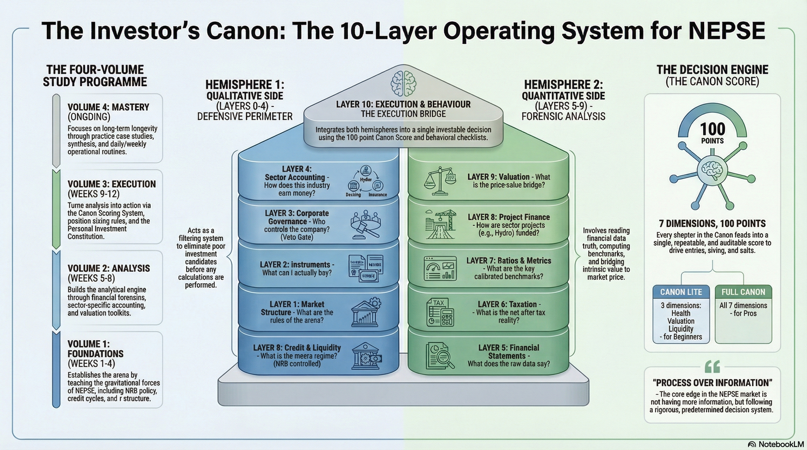
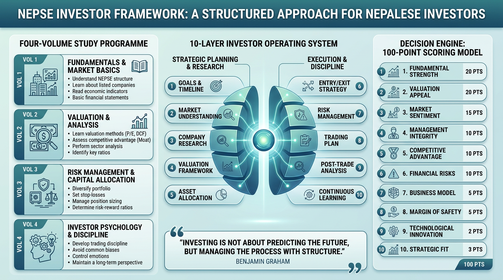

Before the chapters, here is the whole system in three pictures. Think of it like a map of
a city before you walk its streets: the 118 chapters are the streets and buildings, but
these three diagrams show how everything connects — the four volumes you'll move through,
the ten layers of the decision engine, and the 100-point score that turns all of it into a
single, repeatable buy-or-avoid answer for any NEPSE-listed company.

The architecture. The four volumes (Foundations, Analysis, Execution, Mastery)
feed into two hemispheres of the decision engine. Hemisphere 1 — the qualitative
defence — screens out weak companies on liquidity, market structure, instruments, governance,
and sector logic before a single number is calculated. Hemisphere 2 — the quantitative,
forensic side — does the financial statement work: statements, tax reality, ratios, capital
structure, and valuation. Both sides meet at Layer 10 (execution and behaviour) and Layer 11
(timing and the credit cycle), with a 90-day feedback loop that reviews and refines the rules.

The operating system. Each of the four volumes maps to a study period (Weeks
1–4 Foundations, Weeks 5–8 Analysis, Weeks 9–12 Execution, ongoing Mastery). The ten layers
split into a qualitative defensive perimeter (credit and liquidity, market structure,
instruments, governance, sector accounting) and a quantitative forensic side (financial
statements, taxation, ratios, project finance, valuation). The Canon Score compresses all of
it into a 100-point, 7-dimension decision — with a lighter 3-dimension "Canon Lite" version
for beginners still building the habit.

The scoring model in practice. The 10 layers regroup here into two
practical halves — strategic planning and research (goals, market understanding, company
research, valuation, asset allocation) and execution and discipline (entry/exit strategy,
risk management, trading plan, post-trade analysis, continuous learning). The 100 points
themselves are weighted toward what matters most for capital preservation: fundamental
strength and valuation appeal carry 20 points each, market sentiment 15, and management
integrity, competitive advantage, and financial risk 10 each — with the remaining points
spread across business model, margin of safety, technological exposure, and strategic fit.